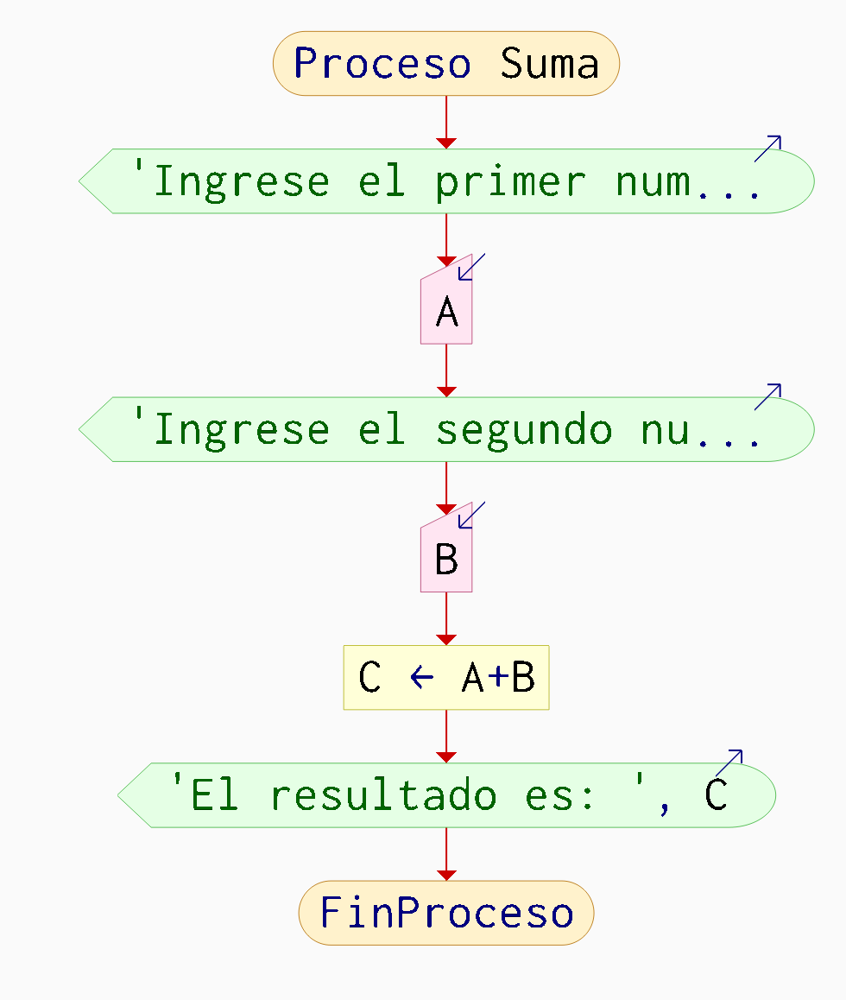
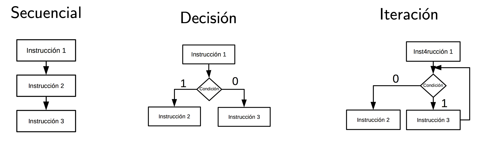

Ing. Eléctrica.
Instituto Tecnológico de Querétaro
Profesor: Dr. Rodrigo López Farías
Secuencial
Seleccion 1.1 si (if)
1.2 si, sino (if - else)
1.3 si, sino si (if - elseif)
1.4 casos (Switch - case)
Ciclo (while)
“Un programa cumple el teorema de estructura si y sólo si es propio y está escrito usando al menos una de las tres estructuras básicas de control”.
Es propio cuando: Tiene un solo punto de entrada y un solo punto de salida y entre dos puntos de control del programa exista al menos un camino.


Cada caja, puede contener desde una instrucción hasta un bloque de instrucciones o función. El rombo representa una condición que altera el flujo del programa al ser o no cumplida. Aunque existen otras estructuras de control mas complejas, son derivadas de estas tres.
Ejemplo de instrucciones que pueden ser ejecutadas secuencialmente.
Ejemplo en PseInt
Algoritmo secuencia
Definir x,z como Entero;
Leer x;
z = x*2;
Imprimir z,"=x*2";
finAlgoritmoEjercicios:
Suma, promedio, producto. Escriba un programa en Pseudocódigo que solicite al usuario 3 números diferentes enteros, y muestre su suma, su promedio, su producto.
Convertidor Celsius -> Farenheit. Escribir in programa en pseudocódigo que pida al usuario una magnitud en C, convierta a Farenheit e imprima su conversión.
Aplicar la fórmula: \[F = 9/5 * C + 35\]
El control selectivo Si-FinSi
Puede o no cumplirse una condición para ejecutar una alternativa.
Si <condición> Entonces
[Bloque de secuencia de instrucciones];
FinSiEjecuta el bloque de secuencia de instrucciones solo si la condición se cumple, si no la ejecución salta hasta la siguiente línea después del FinSi.
El control selectivo excluyente de dos alternativas Si-SiNo-FinSi.
Se cumple una alternativa de las dos.
Si <condición> Entonces
[Bloque de secuencia de instrucciones A];
SiNo
[Bloque de secuencia de instrucciones B];
FinSiEsta forma del sí representa una bifurcación en la ejecución del programa.
Si la condición se cumple entonces se ejecuta el Bloque de secuencia de instrucciones A, Si no se ejecuta el Bloque de secuencia de instrucciones B.
El control selectivo excluyente de mas de dos alternativas. Solo se cumple una de las \(n\) alternativas.
Si <condición> Entonces
[Bloque de secuencia de instrucciones A];
SiNo Si<condicion>
[Bloque de secuencia de instrucciones B];
SiNo Si<condicion>
[Bloque de secuencia de instrucciones C];
FinSiEsta forma del sí representa una bifurcación en la ejecución del programa.
Si la condición se cumple entonces se ejecuta el Bloque de secuencia de instrucciones A, Si no se ejecuta el Bloque de secuencia de instrucciones B.
El control selectivo incluyente de mas de un alternativas.
Se puede cumplir 0 o mas alternativas.
\\Caso 1
Si <condición> Entonces
[Bloque de secuencia de instrucciones A];
FinSi
\\Caso 2
Si <condición> Entonces
[Bloque de secuencia de instrucciones B];
FinSi
\\Caso 3
Si <condición> Entonces
[Bloque de secuencia de instrucciones C];
FinSi
El control selectivo se puede anidar.
Si <condicion1> Entonces
//Opción 1
[Bloque de secuencia de instrucciones A];
Si <condición2> Entonces
//Opcion 2
[Bloque de secuencia de instrucciones B];
Si <condición3> Entonces
//Opción 3
[Bloque de secuencia de instrucciones C];
Si <condición4> Entonces
//opcion 4
[Bloque de secuencia de instrucciones D];
//Opcion 5
[Bloque de secuencia de instrucciones E];
FinSi
FinSi
FinSi
FinSiInstrucciones.
Leer 2 números: si son iguales que los multiplique, si el primero es mayor que el segundo que los reste y si no, que los sume.
Ordenamiento de 2 números.
Descripción:
Escribe un programa que pida al usuario 2 números enteros positivos y los muestre ordenados de menor a mayor.
Entradas:
- Dos enteros positivos.
Salidas:
- Los mismos dos números en orden ascendente.
Ejemplo:
- Entrada: 15, 8
- Salida: 8, 15
Instrucciones.
La jornada laboral estándar es de 40 horas por semana. Si una persona trabaja más de ese límite, debe recibir remuneración extra: * Si trabaja hasta 40 horas: se pagan a $5 por hora. * De 41 a 50 horas: las horas se pagan al doble ($10/hr). * A partir de la Hora $51 las horas se pagan al cuádruple ($20/h).
Escribe un programa que, pida el la cantidad total de horas trabajadas en la semana, calcule el pago total y muestre un desglose.
Ejemplo
Ingrese un número entero no negativo que representa las horas trabajadas en la semana. Ejemplo 53.
Salida:
Horas a $5: 40
Horas al doble: 10
Horas al cuádruple: 3
Pago total: $360
Implementar la estructura de control Si anidada.
Encontrar el menor de 3 números
Descripción:
Pide al usuario 3 números enteros positivos diferentes, compara los valores por pares y muestra el menor.
Resolver con si anidados y condiciones que solo comparen un par de valores. No usar and (&&) o or (||),
Entradas:
- Tres enteros positivos distintos.
Salidas:
- El número menor.
Ejemplo:
- Entrada: 14, 9, 20
- Salida: "El menor es 9"
Ordenamiento de 3 números Descripción:
Tarea: Escribe un programa que pide al usuario 3 números enteros positivos, ordénalos en forma ascendente usando solo estructuras básicas si/if y comparando 1 par de valores por cada condición.
Resolver con si anidados y condiciones que solo comparen un par de valores. No usar and (&&) o or (||),
Entradas:
- Tres enteros positivos.
Salidas:
- Los tres números en orden ascendente.
Ejemplo:
- Entrada: 12, 4, 7
- Salida: 4, 7, 12
Permite repetir un la ejecución de un bloque de instrucciones mientras una condición se cumple.
Mientras <condición>
[Bloque de instrucciones]
FinMientrasEsta estructura puede anidarse.
Mientras <condición>
Mientras <condición>
[Bloque de instrucciones]
FinMientras
FinMientrasTabla de multiplicar simple
Descripción: Escribe un programa en pseudocódigo que solicite al usuario la tabla de multiplicar a imprimir del 1 al 10.
Entradas:
2
Salida
2*1=2
2*2=4
.
.
.
2*10=20La varible centinela es un valor especial que indica el fin de la repetición de un ciclo.
Cálculo de estadísticos de número variable de calificaciones Descripción: Escribe un programa en pseudocódigo que solicite al usuario un número variable de calificaciones de 0 al 10 y se detenga cuando el usuario intruduzca el un valor negativo. Al finalizar calcular el promedio de todos los valores introducidos.
Ejemplo programa en ejecución:
Introduce una calificación: 5
Introduce una calificación: 7
Introduce una calificación: 2
Introduce una calificación: -1
Haz introducido 3 calificaciones.
Su suma es 14.
Su promedio es 4.66La variable bandera es una variable que almacena información sobre el estado de un programa.
Máximo común divisor
En matemáticas, se denomina máximo común divisor o MCD al mayor número que divide exactamente a dos o más números a la vez. Como hablamos del mayor número solo tendremos en cuenta los divisores positivos. Ejercicio: Escribir un programa en pseudocódigo que pida al usuario 2 números enteros positivos y informe al usuario si tienen un MCD mayor a 1.
Entradas. Ingresa un número entero positivo: 5 Ingresa otro número entero positivo: 3.
Salidas El 5 y 3 no tienen maximo común divisor mayor a 1.
Entradas. Ingresa un número entero positivo: 6.
Ingresa otro número entero positivo: 3.
Salidas. El 3 es el MCD del 6,y 3.
Número primo Un número primo es un número entero mayor a 1 que solo es divisible entre 1 y el mismo.
Descripción:
Escribe un programa que pida un número entero positivo y determine si es primo.
Entradas:
- Número entero positivo.
Salidas:
- Mensaje: “Es primo” o “No es primo”.
Ejemplo:
Verificando número primo. - Entrada: 17
- Salida: "17 es primo"
Primos gemelos son pares de números primos cuya distancia es de 2 unidades. Por ejemplo, el par (3, 5) son primos gemelos porque son primos y su diferencia es 2. Otros ejemplos son (11, 13) o (41, 43). El número 5 es el único primo que puede pertenecer a dos pares de primos gemelos: (3, 5) y (5, 7).
Descripción:
Escribe un programa que pida un número entero positivo y determine si, este es primo, y si si, indicar si tiene número primo gemelo e imprimir el par de números primos gemelos.
Entradas:
- Número entero positivo 2.
Salidas: Indicar, si es primo y si tiene un primo gemelo
Salidas: 11 es primo y el 13 es primo con distancia de dos unidades, por lo tanto son primos gemelos
Ejemplo:
Ingresa un número entero positivo mayor que 1.
- Entrada: 13
- Salida: "13 es primo y el 15 no es primo por lo que no son números primos positivos"
El control selectivo se puede anidar.
Si <condicion1> Entonces
//Opción 1
[Bloque de secuencia de instrucciones A];
SiNo
Si <condición2> Entonces
//Opcion 2
[Bloque de secuencia de instrucciones B];
SiNo
Si <condición3> Entonces
//Opción 3
[Bloque de secuencia de instrucciones C];
SiNo
Si <condición4> Entonces
//opcion 4
[Bloque de secuencia de instrucciones D];
SiNo
//Opcion 5
[Bloque de secuencia de instrucciones E];
FinSi
FinSi
FinSi
FinSi